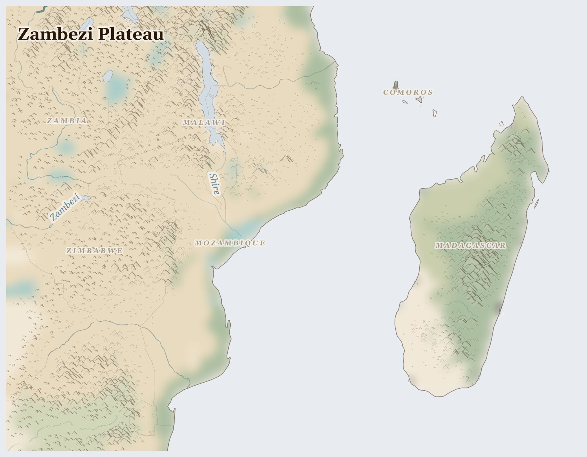

Zambezi Plateau
where laterite plateau sheds monsoon into a single flood pulse that must fill fields upstream without drowning the delta
The Zambezi begins quietly in the wet miombo woodlands of Zambia's northwest, seeping through dambo wetlands and gathering itself across a thousand kilometres before it falls at Victoria Falls and fills the lake behind Kariba Dam. From Kariba, it flows into Cahora Bassa — a second dam, a second country, Mozambique — and then through the floodplain to the Indian Ocean. Four nations drink from this river.
Lives Lived Here
Before dawn on the shore of Lake Malawi, near Mangochi, a fisherman pulls his plank boat onto the sand and begins sorting the night's catch. There are usipa — small silvery lake sardines — but fewer chambo than his father caught, and fewer than his father's father. His wife will spread the usipa on drying racks in the sun, smoke them over mopane charcoal, and carry them by minibus to the Lilongwe market, where she sells them by the cup to women who feed their families on what they can afford that day. The chambo were the lake's gift — large, meaty, slow to reproduce. The gill nets got finer, the boats got more, the breeding grounds were fished through the November closure. Now the usipa carry the weight the chambo used to bear.
In Mashonaland West, a Zimbabwean farmer walks his tobacco field in the early morning, checking leaves for ripeness. He grows tobacco on contract for British American Tobacco — the company provides seed and fertiliser on credit, sets the price at harvest, and deducts the debt before paying. His children help with the curing: they spend July and August tending the barn fires, missing school. He knows tobacco exhausts the soil faster than maize, but maize does not pay the school fees that tobacco — after the debt is subtracted — barely covers. His wife keeps a kitchen garden behind the house where she grows rape, tomatoes, and groundnuts. The garden feeds the family. The tobacco field feeds the contract.
On the coast of Cabo Delgado, south of Mocimboa da Praia, a woman who used to fish for prawns in the mangrove channels now lives in a displacement camp outside Pemba. She arrived in 2021 with her three children after insurgents burned her village. The camp is crowded, the latrines overflow in the rains, and the food rations from WFP have been cut twice this year. She hears that the gas facility at Afungi is still being built, that TotalEnergies declared force majeure but did not leave, that the Rwandan soldiers patrol the road north. She does not know what LNG means. She knows that the sea she fished is now behind a security perimeter, and the life she had is not coming back on any timeline she has been given.
In Mashonaland West, a Zimbabwean farmer walks his tobacco field in the early morning, checking leaves for ripeness. He grows tobacco on contract for British American Tobacco — the company provides seed and fertiliser on credit, sets the price at harvest, and deducts the debt before paying. His children help with the curing: they spend July and August tending the barn fires, missing school. He knows tobacco exhausts the soil faster than maize, but maize does not pay the school fees that tobacco — after the debt is subtracted — barely covers. His wife keeps a kitchen garden behind the house where she grows rape, tomatoes, and groundnuts. The garden feeds the family. The tobacco field feeds the contract.

Reference map. Country boundaries and features are approximate.
What Presses
The weight on Zambezi Plateau
{'location': 'Cabo Delgado, Mozambique', 'narrative': "In the villages around Palma, on Mozambique's northern coast, the gas was found in 2010. TotalEnergies holds a 51% stake in the Afungi LNG facility — the largest private investment in African history. The communities that fished these waters and farmed this land were moved. Then the insurgency came. Since October 2017, at least 6,498 people have been killed in political violence in Cabo Delgado. Over a million people have fled. In the last two weeks of February 2026, at least 5 political violence events and 30 fatalities were recorded. The insurgents recruit from the same young men who were displaced by the gas project — the grievance that the extraction created is the fuel that the insurgency burns. Rwandan troops patrol the perimeter. The gas is still in the ground, the facility is still under construction, the people are still in camps in Pemba and Montepuez, and the fishing grounds behind the security fence are empty of everyone except soldiers."}
{'location': 'Communal Farming Areas, Zimbabwe', 'narrative': "Zimbabwe's communal areas — Mashonaland, Manicaland, the Midlands — were where the majority of the population was confined during the colonial era, on the poorest soils, with the least water. After independence, land reform redistributed some commercial farmland, but the communal areas remain: overcrowded, over-farmed, under-invested. Today 2.6 million Zimbabweans cannot feed themselves. Water stress runs at 46%, the highest in the bioregion. Meanwhile, the Marange diamond fields in Manicaland — discovered in 2006, seized by the military in 2008 — produced billions of dollars in rough diamonds. The money did not reach Marange. Communities were forcibly relocated. Artisanal miners were shot. The diamonds left through military-connected enterprises and international smuggling networks, and the Kimberley Process certified them as clean. The soil that cannot grow enough maize sits beside a hole that produced enough diamonds to feed the province for a generation."}
{'location': 'Lakeshore, Malawi', 'narrative': "Lake Malawi is 580 kilometres long and holds more freshwater fish species than any other lake on earth — over 800, most found nowhere else. The chambo, a large cichlid and the country's most important protein source, has collapsed. Overfishing with fine-mesh nets, fishing through breeding closures, and rising water temperatures have brought the stock below recovery thresholds. Three million Malawians are food-insecure. The women who process and trade dried fish at lakeshore markets — the backbone of the protein supply chain — are earning less each season. Inland, in the central region, 350,000 households grow tobacco for export on the Lilongwe auction floors. The tobacco pays better than maize, but it exhausts the soil, poisons the workers with nicotine through their skin, and pulls children from school to tend the curing barns. The nutritional trade-off is literal: every hectare planted to tobacco is a hectare not planted to food, in a country where hunger is the baseline."}
Eleven resource streams flow outward from this bioregion — gas, rubies, diamonds, copper, nickel, cobalt, tea, tobacco, vanilla, sapphires, rosewood — and the people who live where these things are found are poorer, hungrier, and less safe than those who buy them. What does not return with the money is the soil fertility, the fish stock, the forest, the floodplain, the community that was there before the concession was signed. 90 killed (3 months); 10.4M food insecure (current); 461,639 displaced (total); liquefied natural gas, rubies, diamonds leaving.
This Week
Mozambique: Despite sustained economic growth over the past two decades, Mozambique continues to face deepening poverty, food insecurity, and vulnerability to shocks. The disconnect between national growth figures and lived experience reflects an economy organised around gas, rubies, and aluminium export — sectors that generate GDP without generating food security.
Mozambique: In Cabo Delgado province, at least 5 political violence events and 30 reported fatalities were recorded between 23 February and 8 March 2026. Since October 2017, the total stands at 2,338 events and 6,498 fatalities. The insurgency continues despite Rwandan military deployment, and civilian communities remain trapped between armed groups and security forces.
The Zambezi still flows to the sea. But the dams decide when, and the flood that once fed the floodplain now generates kilowatt-hours for cities that do not know the river's name. The people downstream remember the flood. They plant where it used to reach, and some years it does not come.
For Prayer
For the 10.4 million people across Zambezi Plateau who cannot meet their daily food needs. That supply routes hold, that harvests come, that aid reaches those cut off.
For the 462,000 people displaced from their homes — especially in Malawi, where the crisis is most acute. For safety on the road and welcome at the journey's end.
For communities enduring armed conflict between ISIS-Mozambique and ZANU-PF Security Establishment across Zambezi Plateau — 90 killed in the past three months. For protection of civilians and for those who have lost loved ones.
Especially for Malawi, facing the most severe convergence of crises in this region. This week in Malawi: WFP urgently requires USD 13.3 million to cover six‑month net funding needs (March 2026–August 2026), representing 38 percent of requirements.. For those making impossible decisions about whether to stay or flee, and for those who cannot choose.
For the helpers in Zambezi Plateau — for their safety, their courage, and their capacity to reach those most in need. This week in Mozambique: The European Commission announced today €36 million in EU humanitarian aid that will reach 6 countries across Southern Africa and the Indian Ocean region..
For every act of resistance and care in Zambezi Plateau — communities sharing food, farmers saving seed, neighbours sheltering neighbours. That these small acts of defiance outlast the crisis.
Out of the depths have I cried to you, O Lord; Lord, hear my voice; let your ears consider well the voice of my supplication.
Most merciful God, who by the death and resurrection of your Son Jesus Christ delivered and saved the world: grant that by faith in him who suffered on the cross we may triumph in the power of his victory; through Jesus Christ your Son our Lord, who is alive and reigns with you, in the unity of the Holy Spirit, one God, now and for ever.
Amen.
Seeds of Hope
In Malawi's lakeshore communities, women fish traders have organised cooperative buying groups to negotiate better prices at Lilongwe market — pooling transport costs, sharing drying racks, and collectively refusing middlemen who offered half the market rate. In Zambia's Copperbelt, community health monitors trained by local NGOs document water contamination from tailings — building the evidence base that formal environmental assessments do not collect, because the mining companies commission the assessments.
For Reflection
What food in your pantry comes from the same global markets?
Whose hunger makes your abundance possible?
Looking Ahead
- Mozambique's Cabo Delgado insurgency shows no sign of resolution — 30 fatalities in two weeks of late February 2026 indicate sustained violence despite Rwandan military deployment.
- TotalEnergies has not withdrawn, but has not resumed full construction; the communities displaced for the project remain in camps with no return timeline.
- Cabo Delgado insurgency dry season May-October -- historically the period when armed groups in Mozambique's gas-rich north intensify operations and TotalEnergies reassesses force majeure
- Zimbabwe's lean season October-February -- 2.6 million food insecure in what was once the breadbasket of southern Africa; watch for IPC updates in November
- Lake Malawi chambo fishing ban enforcement -- seasonal closures are the only mechanism preventing total fishery collapse, and compliance determines protein security for millions
Carry This
What to bring with you from this briefing
Take Action
Organizations working at the nodes this briefing traces
Mozambican environmental justice organization. Campaigns against mega-projects displacing communities — LNG infrastructure in Cabo Delgado, coal mining in Tete Province, and heavy mineral sands extraction along the coast.
Works with the communities the briefing documents as cost-bearers — families displaced by TotalEnergies LNG construction in Palma, farmers losing land to coal concessions in the Zambezi valley, and fishing communities blocked from coastlines by mineral sands operations.
Zimbabwean research organization documenting the governance of extractive industries. Investigates diamond mining in Marange, lithium extraction in Bikita and Goromonzi, and how mining revenues bypass affected communities.
Traces the mineral flows the briefing follows — lithium from Bikita mine entering Chinese battery supply chains, diamonds from Marange financing political patronage networks, and chrome exports from the Great Dyke where artisanal miners work without safety protections.
Advocates for communities affected by large dam projects in the Zambezi Basin. Tracks the impacts of Cahora Bassa, Kariba, and proposed new dams on downstream fisheries, wetlands, and flood-recession agriculture.
Addresses the water infrastructure the briefing documents — how Zambezi dam operations prioritize hydroelectric export revenue over downstream flood cycles that sustain fisheries and farming for millions in the delta, and how new dam proposals threaten Batoka Gorge ecosystems.
Mozambican public integrity research centre. Investigates illicit financial flows from extractive industries, hidden debt scandals, and how natural gas revenues are captured by political elites rather than reaching conflict-affected communities.
Documents the revenue capture the briefing traces — how Mozambique's LNG wealth is structured through offshore contracts that minimize community benefit, how the hidden debt crisis diverted $2 billion from public services, and how Cabo Delgado's gas wealth coincides with its insurgency.
Pan-African alliance centering women's experiences in extractive industries. Documents how mining and large-scale agriculture disproportionately affect women's access to water, firewood, and farming land across southern Africa.
Centers the gendered cost-bearing the briefing names — women in Tete Province walking further for water after coal mining contaminated rivers, women in Marange diamond fields excluded from compensation schemes, and women smallholders in Zambia's copper belt losing farmland to mine expansion.
Intergovernmental commission of eight Zambezi riparian states coordinating water resource management. Facilitates data sharing on flow regimes, irrigation demand, and environmental flows across the basin.
Governs the water allocation conflicts the briefing traces — competing demands between Zambian copper mining, Zimbabwean irrigation, Mozambican hydropower, and delta ecosystem needs, where upstream extraction decisions determine downstream food security.
Generated 2026-03-18